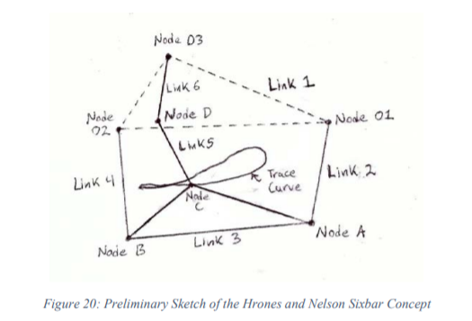

翻譯 <<
Previous Next >> Chapter7細部設計
Chapter4設計概念
4.1概念1-Hrones和Nelson Sixbar
4.1.1概念概述
第一個被考慮的設計是使用一個連桿來驅動腳踝沿著已知的路徑運動，通過精確的步態驅動脛骨和股骨連接。
Hrones 與 Nelson創造了各種各樣的耦合桿曲線，包含了四桿的集合。
這種設計使用了一個四桿，它的耦合點曲線非常類似於腳踝路徑。
脛骨連接到耦合點，耦合點在代表膝蓋的節點處連接到股骨連接點，而股骨連接點固定在代表臀部的接地節點上，則由此產生的為六連桿。
下面圖20中，說明了這個概念。

Link 1表示地面鏈路。
Link 2表示由馬達驅動的曲柄。
Link 3是驅動腳踝的耦合器，由節點C表示。
Link5和6分別表示脛骨和股骨。
節點D和O3表示，分別是膝關節和髖關節。
為了確保這個設計只有一個自由度，它的機動性必須等於一個自由度。
為了驗證這一點，使用自由度方程並代入該連桿所包含的連桿和關節的數量。
這個概念有六個連桿和七個完整的關節。因此，計算出自由度 𝑀:
𝑀 = 3 ∗ (6 − 1) − 2 ∗ (7) − 1 ∗ (0) = 1
由於這個連桿有一個自由度，它只能遵循一條可預測的路徑。
這對於這個項目來說是成立的，因為如果腳踝在自然步態中遵循一個類似於人的曲線，那麼膝蓋也應該遵循它的自然運動。
為了利用這一概念重建人類步態，需要5個數據:
1.走路時腳踝的曲線
2.脛骨的長度
3.股骨的長度
4.步長
5.臀部與腳踝曲線的相對位置。
翻譯 <<
Previous Next >> Chapter7細部設計